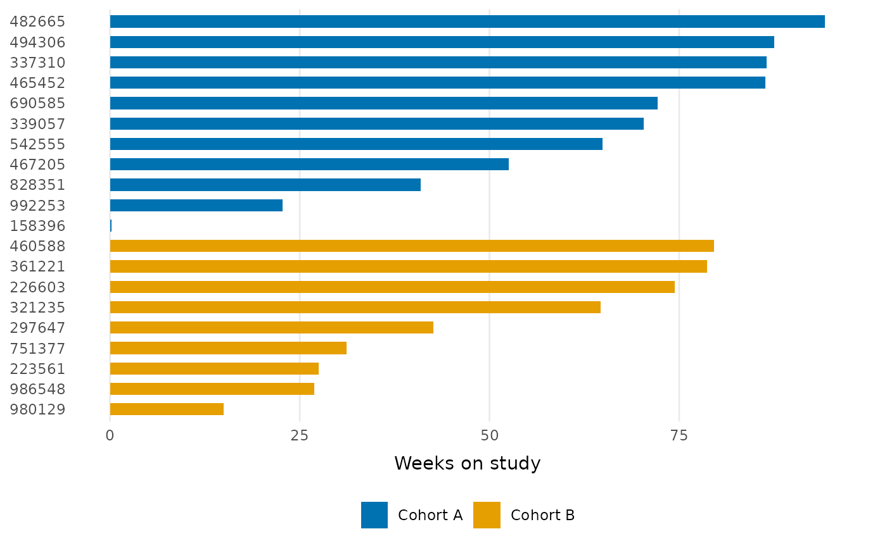

The core layer of a swimlane plot: one horizontal bar per subject, with subjects on the y-axis and duration on the x-axis. Optionally filled by a grouping variable, either one row per subject (e.g. cohort) or several rows per subject for stacked segments (e.g. treatment phases).
Usage
geom_swimlane(
id_var,
duration_var,
fill_var = NULL,
width = 0.6,
position = ggplot2::position_stack(reverse = TRUE),
...
)Arguments
- id_var
Column with the subject identifier, mapped to the y-axis. Use
order_swimlane()first to control lane order.- duration_var
Numeric column with the bar length, mapped to the x-axis.
- fill_var
Optional column mapped to bar fill. With one row per subject this colors whole lanes (e.g. by cohort); with multiple rows per subject the segments stack (e.g. treatment phases).
- width
Bar width.
- position
Position adjustment. The default stacks segments in factor-level order, so the first level of
fill_varstarts at zero.- ...
Other arguments passed to
ggplot2::geom_col().
Details
In addition to the bars, this function adds scale_fill_swimlane() (when
fill_var is supplied), scale_shape_swimlane() (shared by the
annotation layers such as geom_swimlane_status()), and
ggplot2::coord_cartesian() with clip = "off" so annotations may extend
into the plot margins. Adding your own fill or shape scale replaces the
built-in one; ggplot2 will print its standard message when that happens.
Examples
library(ggplot2)
patient_disposition |>
order_swimlane(subject, weeks_on_study, cohort) |>
ggplot() +
geom_swimlane(subject, weeks_on_study, cohort) +
labs(x = "Weeks on study") +
theme_swimlane()
